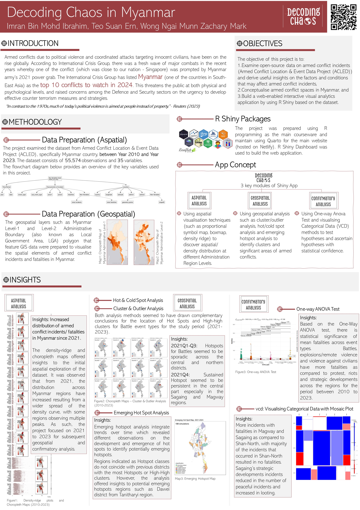

Decoding Chaos - Analysing Armed conflicts in Myammar
Overview of Project

Project Website
Shiny Application Story board
https://decoding-chaos.netlify.app/prototype/storyboard/storyboard
Shiny Application user guide
Shiny Application links - Individual modules
Aspatial Analysis by Teo Suan Ern: https://imran-mi.shinyapps.io/Group5VAA-Decoding-Chaos-Aspatial/
Geospatial Analysis by Imran Ibrahim: https://imran-mi.shinyapps.io/Group5VAA-Decoding-Chaos-Geospatial/
Confirmatory Analysis by Zachary Wong: https://imran-mi.shinyapps.io/Group5VAA-Decoding-Chaos-Confirmatory/